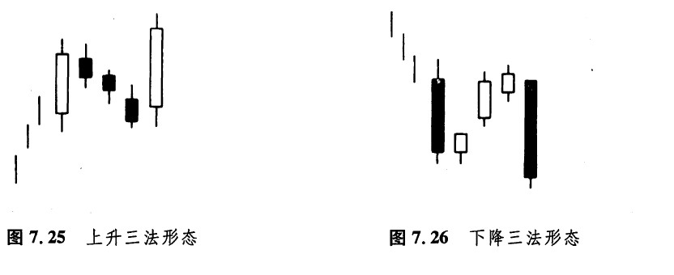
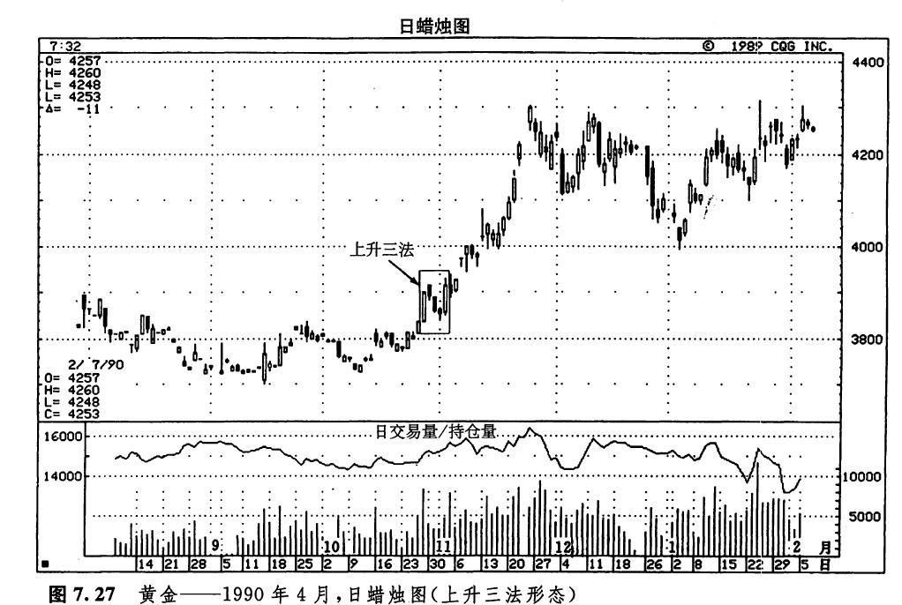
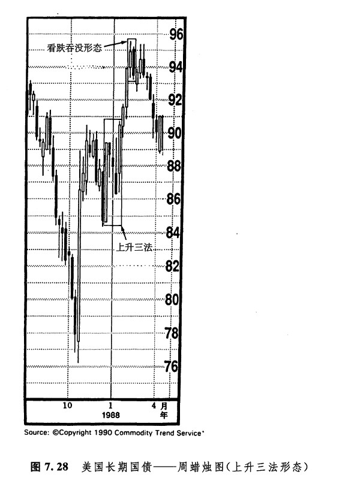
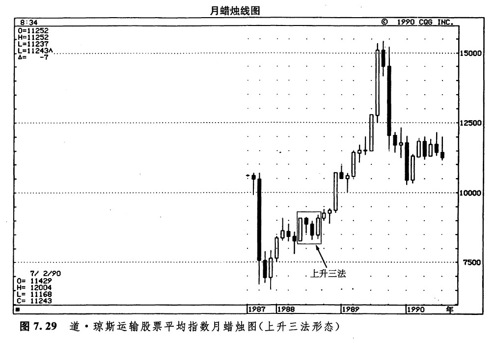
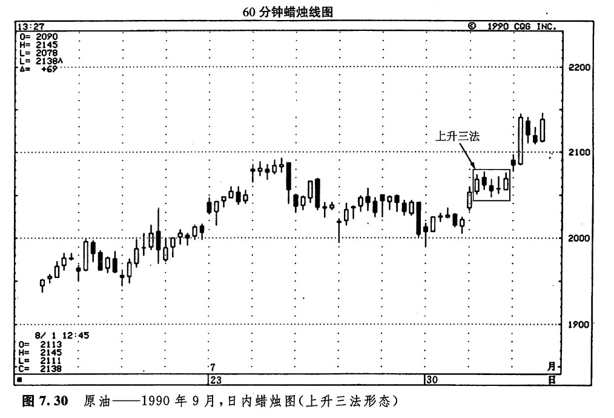
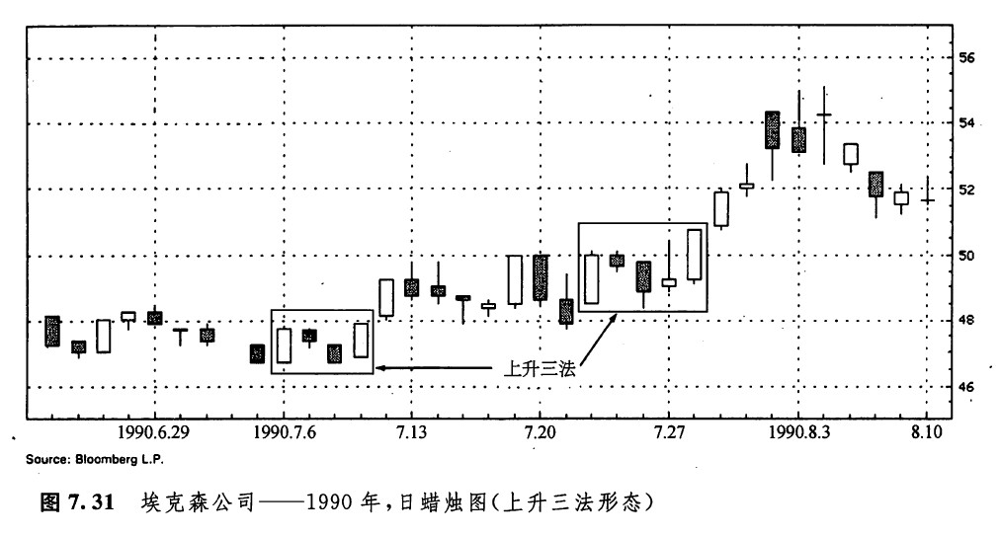
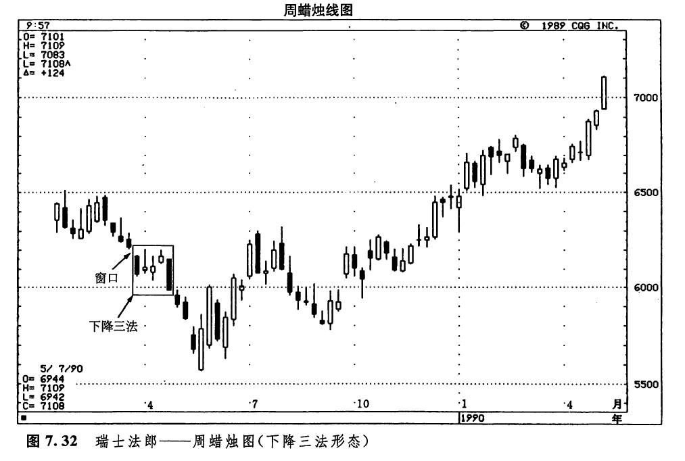
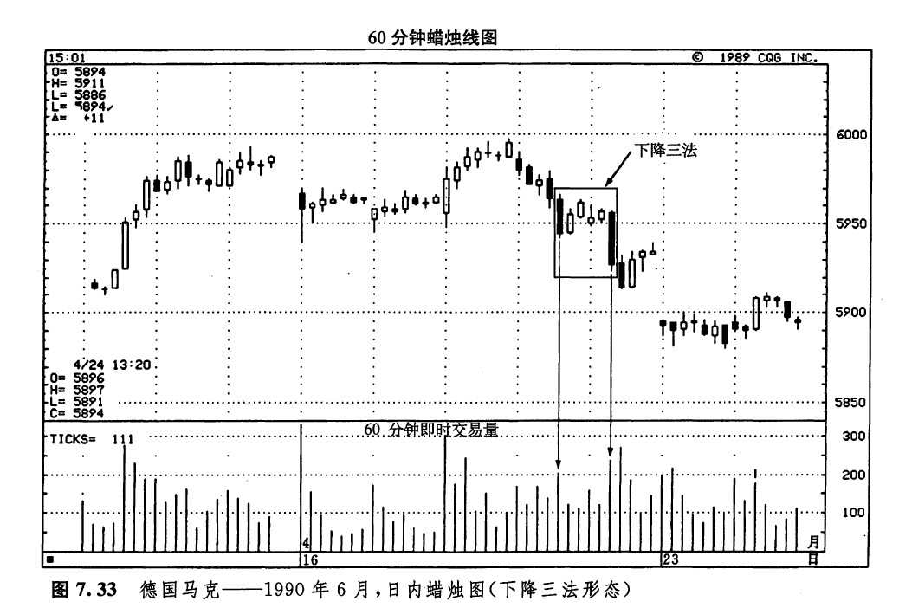
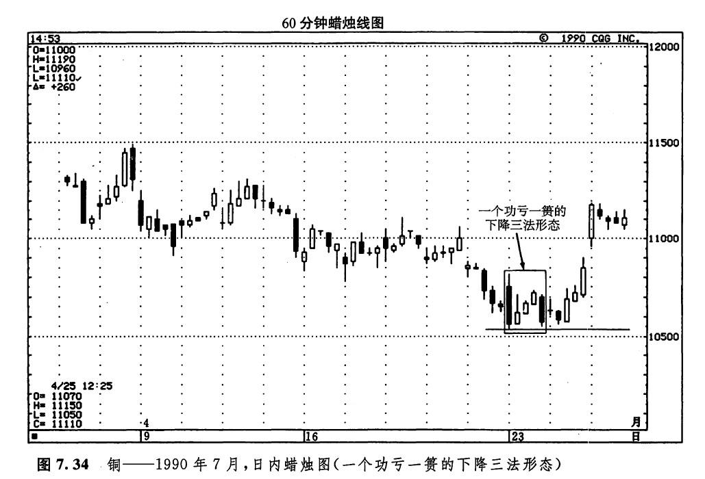
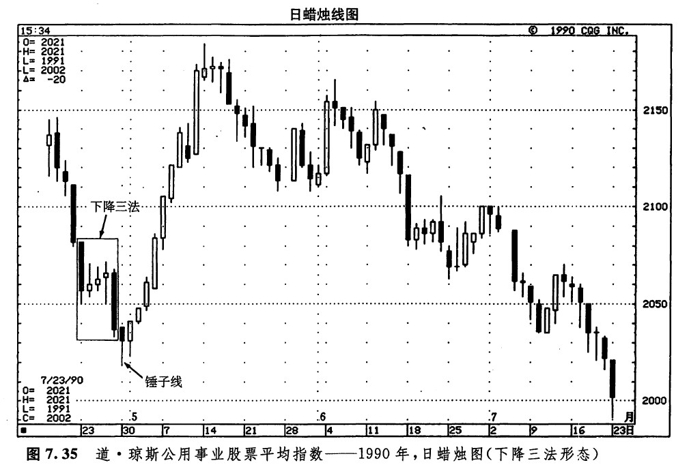

所谓三法形态，包括看涨的上升三（蜡烛线）法，以及看跌的下降三（蜡烛线）法（请注意，这里我们又与数字3不期而遇了）。这两类形态均属于持续形态。上升三法形态（如图7.25所示）的判别标准，包括以下几个方面：
1.首先出现的是一根长长的白色蜡烛线。
2.在这根白色蜡烛线之后，紧跟着一群依次下降的小实体蜡烛线。这群小实体蜡烛线的理想的数目是3根，但是如果比3根再多1、2根，也是可以接受的，条件是，这群小实体蜡烛线基本上都局限在前面那根长长的白色蜡烛线的价格范围之内。我们不妨作这样的理解：由于这群较小的蜡烛线均处于第一天的价格范围之内，它们与最前面的长蜡烛线一道，构成了一种类似于三日孕线形态的价格形态（在本形态中，所谓处于最前面的蜡烛线的价格范围之内，指的是这群小蜡烛线均处于该蜡烛线的上下影线的范围之内；而在真正的孕线形态中，仅仅是小蜡烛线的实体包含在前面那根蜡烛线的实体之内）。小蜡烛线既可以是白色的，也可以是黑色的，不过，黑色蜡烛线最常见。
3.最后一天应当是一根具有坚挺的白色实体的蜡烛线，并且它的收市价高于第一天的收市价。同时，最后这根蜡烛线的开市价也应当高于前一天的收市价。
本形态与西方技术分析理论中的看涨旗形或看涨三角旗形形态有相似之处。不过，上升三法形态的理论起源一直可以上溯到18世纪。一般认为，三法形态代表了买、卖之外的第三种交易策略——休息，也代表了牛、熊之争的一次休战。用更时髦的说法来形容，市场通过这一群小蜡烛线，获得了一次“喘息的机会”。
下降三法形态（如图7.26所示）与上升三法形态在图形上完全是对等的，只不过方向相反而已。这类形态的形成过程如下：市场应当处在下降趋势中，首先出场的是一根长长的黑色蜡烛线。在这根黑色蜡烛线之后，跟随着大约三根依次上升的小蜡烛线（通常，它们都是白色的），并且这群蜡烛线的实体统统局限在第一根蜡烛线的范围之内（包括其上、下影线）。最后一天，开市价应低于前一天的收市价，并且收市价应低于第一根黑色蜡烛线的收市价。当最后这根黑色蜡烛线形成后，市场便会向下滑落。本形态与看跌旗形或看跌三角旗形形态相似。

在图7.27中，显示了一例经典的上升三法形态。市场本处于上升趋势，这时出现了一根白色蜡烛线，它的后面跟随着三根小实体的黑色蜡烛线。基本上，这群黑色蜡烛线都处于该白色蜡烛线的价格范围之内。最后一根白色蜡烛线的收市价超过了第一根蜡烛线的收市价。在三法形态中，下面这项因素可能加强其预测意义：如果头、尾两根白色（黑色）蜡烛线的交易量超过了中间那群小蜡烛线的交易量，那么，该形态的分量就更重了。在本图所示的上升三法形态中我们看到，两根白色蜡烛线的交易量明显高于其中三根小的黑色蜡烛线的交易量。

如图7.28所示，也是一个上升三法形态的实例。这是美国长期国债市场。当图示的上升三法形态完成后，该市场一路上推，一直到图示的看跌吞没形态出现才罢手。

在理想的上升三法形态中，在长长的白色蜡烛线之后跟着三根小的黑色蜡烛线。但是在如图7.29所示的实例中，只有两根小的黑色蜡烛线。1988年6月的市场变化形成了一根高高的白色蜡烛线。接下来，7月和8月是两根黑色蜡烛线，并且它们都处于6月的白色蜡烛线的价格范围以内。9月，形成了另一根白色蜡烛线，它为当前的上涨行情创出了新高，但是它的收市价未能超过6月的收市价，虽然两者的差距仅仅有3个基本价格变化单位。在通常情况下，我们本来能期望看到更高的收市价。就这个实例而言，一方面考虑到最后这根白色蜡烛线（9月份）的收市价只差3个基本价格单位便能超过6月的收市价，另一方面也考虑到下一个月的蜡烛线发出的看涨验证信号，因此，我们仍然把这个例子看作一个上升三法形态。10月的收市价创出了一个新高，提供了上述的验证信号，确保了采取看涨立场的可靠性。

在图7.30所示的实例中，三根小蜡烛线明显地介于第一根蜡烛线的最高点与最低点的范围之内。在它们之后，出现了另一根白色蜡烛线。最后这根白色蜡烛线的收市价与第一根白色蜡烛线的收市价处在同一水平上，因此，我们还需要进一步的验证信号。当下一小时的开市价高于最后这根白色蜡烛线的时候，我们就得到了一个看涨的验证信号。请注意图示的上升三法形态的顶部是如何转化为支撑水平的，这一支撑区在8月1日的第一个小时经受了市场的试探。

在图7.31中，出现了这种看涨持续形态的两个实例。其中第一个上升三法形态发生在7月初。这一实例说明，在上升三法形态中，也可以只有两根小蜡烛线跟随在第一根高高的白色蜡烛线之后，而不一定是三根。请注意这两根黑色蜡烛线是如何局限在第一根蜡烛线的范围之内的。本形态的最后，是一根白色实体的蜡烛线，它的开市价高于前一天的收市价，收市价为这轮上涨行情创出了新高。如图7.31所示的第二个实例显示，在上升三法形态中，第一根白色蜡烛线之后的小蜡烛线的实体并不一定非黑色不可。只要这群蜡烛线的实体维持在第一根白色蜡烛线的范围之内，就有潜力构成一个三法形态。在本实例中，随着最后一根白色蜡烛线收市于一个新高水平，上述潜力就完全发挥出来了。

如图7.32所示，1989年3月，市场形成了一个窗口。根据蜡烛图技术的格言，“窗口之后发生的市场回撤，将重新返回窗口”，我们预期市场将向上反弹到该窗口附近。从这里开始，市场将再度恢复下跌趋势。在这个窗口之后，出现了三个小实体。市场回头试探该窗口的过程发生在4月里的第一个星期。这次向上试探失败了。2周之后，也就是在其中第三根小实体的白色蜡烛线上，市场再次企图向上关闭这个窗口。这一次，还是未能成功。于是，最后一根黑色蜡烛线出现了，它的收市价低于图示的第一根黑色蜡烛线的收市价。这样就完成了这个由五根蜡烛线组成的下降三法形态。

在如图7.33所示的下降三法形态的实例中，包含着四根而不是三根小实体蜡烛线。对三法形态来说，关键在于这群小蜡烛线的实体统统维持在第一天的价格范围之内。最后是一根大的黑色蜡烛钱，于是，该形态就完成了。请注意本图所示的即时交易量（TM）是怎样验证其中两条黑色蜡烛线的信号的。具体说来，两根黑色蜡烛线的即时交易量（TM）呈扩张状态，而中间的白色蜡烛线的即时交易量（TM）呈萎缩状态。在第十五章，我们还要详细介绍蜡烛线与交易量的关系，其中也包括即时交易量（TM）的有关内容。

图7.34所示是一张日内图表。本例揭示了一项重要原则——不要在价格形态的演变过程中过早采取行动，只有在形态完成后才能有的放矢。本图所示，正是一个流产了的下降三法形态的实例。在4月23日的头一个小时内，市场形成了一根很长的黑色蜡烛线。随后，出现了三根上升的小实体。在这群小蜡烛线的后面，又是一根长的黑色蜡烛线。但是，在这里，第五个小时的蜡烛线的“收市价”并没有达到第一小时的“收市价”以下的水平。因此，这个下降三法形态还没有最后确定。如果下一根蜡烛线提供了看跌验证信号，那么，我们仍然可以将上述图案归结为一个下降三法形态，因为其中第一根黑色蜡烛线与第五根黑色蜡烛线的收市价是相当接近的。然而，在接下来的一两个小时内，没有发生任何看跌的验证信号。

在本例的最后一根黑色蜡烛线之后，出现了一根十字线。这根十字线与它前面的黑色实体结合起来，构成了一个十字孕线形态。这是一个反转形态，暗示当前的下降趋势不会再持续下去了。另外，在随后的数小时内，各条蜡烛线的低点都成功地向下试探了4月23日以来的日内最低价格水平。种种迹象显示，如果我们预料这个下降三法形态将成功，可能是猜错了。一定要等到价格形态确实已经完成时，或者得到了其他信号的验证后，才能按照其预测意义采取行动。
图7.35所示为下降三法形态的一个经典的实例。不过，其后的一根锤子线抵消了它的看跌意义。如果说仅仅凭这一根锤子线还不足以使我们确信下降趋势已经告终的话，那么，锤子线后面眼着一根白色蜡烛线，为我们提供了更多的证据。这根白色蜡烛线与锤子线一起，组成了一个看涨吞没形态。

下一篇：前进白色三兵形态
上一篇：跳空并列白色蜡烛线形态